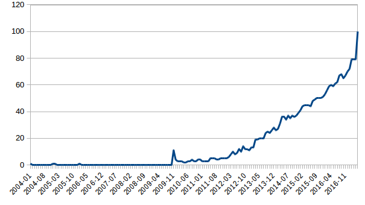
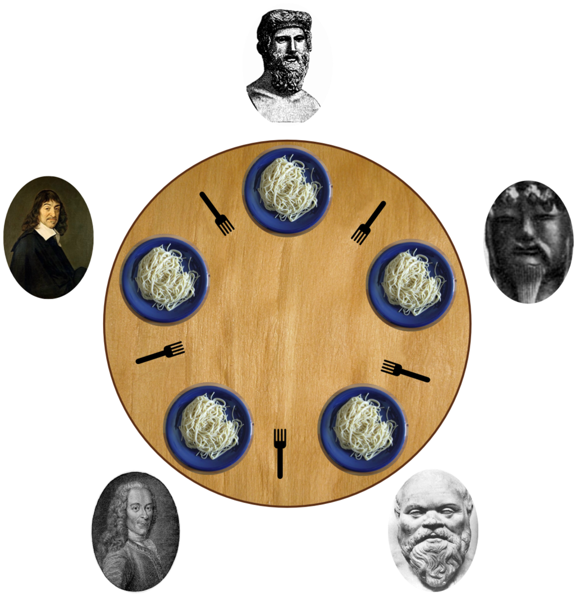

Introduction
How to learn a new language from scratch in limited time?
When you set out to learn a new language, it makes sense to start with the features it shares with languages you already know — the common ground used to express well-known concepts. In short: exploit the commonalities. Once a basic understanding has been established, you are free to explore the new possibilities and new ways of doing things that the language offers.
Agenda
- Gathering data — what Go is, and what makes it different
- Entering the ship — setting up the Go environment (compiler, tools, ...)
- Session 01 — a rapid introduction to the fundamentals of Go
- Session 02 — Interfaces
- Session 03 — Concurrency
Gathering data
What is Go?
Go is an open-source, general-purpose programming language.
- Compiled
- Statically typed
- Concurrent
- Garbage collected
- Simple and productive
It builds fast at scale, ships a robust standard library, supports a multitude of platforms, and comes with a complete set of tools (build, fetch, test, document, profile, format).
What is different?
Coming from other mainstream languages, the most striking thing about Go is what it leaves out:
- No classes, no inheritance, no generics*
- No function overloading, no default argument values
- No exception handling
- No pointer arithmetic
Public reception

Entering the ship
Setting up the Go environment
Installing the Go tools
GOROOT and GOPATH no longer need to be set by hand. The 2017 instructions are kept below for historical context.Get the archive for your system from go.dev/doc/install. Extract it somewhere, e.g. /usr/local:
$ tar -C /usr/local -xzf go$VERSION.$OS-$ARCH.tar.gzExport the path and set the GOROOT environment variable (you may want to add commands like the following to $HOME/.profile):
$ export GOROOT=/usr/local/go
$ export PATH=$PATH:$GOROOT/binTest your installation:
$ go version
$ go env GOROOTCreating a Workspace
GOPATH were superseded by Go modules in 2018 (Go 1.11). You no longer keep all code under a single $GOPATH/src tree. This slide is historical.Go programmers traditionally kept all their code in a single workspace — a directory hierarchy with three directories at its root:
gocode/
├── src/ # contains Go source files,
├── pkg/ # contains package objects, and
└── bin/ # contains executable commands.The go tool builds source packages and installs the resulting binaries to the pkg and bin directories. Set the GOPATH environment variable to specify the location of your workspace:
$ export GOPATH=$HOME/gocodeThe path to a package's directory determined its _import_path_. Note that this differs from other environments in which every project has a separate workspace tied to a version-control repository.
Creating and Running Go Programs
Create a new package directory inside your workspace:
$ mkdir -p $GOPATH/src/github.com/user/helloCreate a file named hello.go inside that directory, containing the following Go code:
package main
import "fmt"
func main() {
fmt.Printf("Why are you here?\n")
}Run the program:
$ go run hello.goSession 01: Basics
Establishing a basic understanding
Packages
package main
import (
"fmt"
"math/rand"
)
func main() {
fmt.Println("My favorite number is", rand.Intn(10))
}Every Go program is made up of packages. Imports can be grouped into a parenthesized import statement. Programs start running in package main.
Exported names
package main
import (
"fmt"
"math"
)
func main() {
fmt.Println(math.pi)
}A name is exported if it begins with a capital letter. When importing a package, you can refer only to its exported names; unexported names are not accessible from outside the package.
math.pi is unexported. The exported constant is math.Pi (capital P).Functions
package main
import "fmt"
func greet(name string) {
fmt.Println("Hello,", name+"!")
}
func main() {
greet("Gopher")
}Functions can take zero or more arguments. Notice that the type comes after the variable name.
Functions (continued)
func add(x, y int) int {
return x + y
}func swap(i int, j bool) (bool, int) {
return j, i
}If multiple arguments are of the same type, the type only needs to be specified once. Functions can return any number of results.
Higher-Order Functions
package main
import (
"fmt"
"math"
)
func compose(f, g func(float64) float64) func(float64) float64 {
return func(x float64) float64 {
return f(g(x))
}
}
func main() {
sincos := compose(math.Sin, math.Cos)
fmt.Printf("%T: 0.5 -> %v\n", sincos, sincos(0.5))
}Functions are values too. They may be passed as function arguments and returned as results.
Variables
package main
import "fmt"
var a int
var b, c string = "alice", "bob"
func main() {
host, port := "localhost", 3035
fmt.Println(a, b, c, host, port)
}The var statement declares a list of variables (at package or function level); the type is last. Variable declarations can include initializers (one per variable). Inside a function, the short assignment statement := can be used in place of a var declaration with implicit type.
var, func, etc.), so := is not available there. See Go's declaration syntax.Zero values
package main
import "fmt"
func main() {
var i int
var f float64
var b bool
var s string
fmt.Printf("%v %v %v %q\n", i, f, b, s)
}Variables declared without an explicit initial value are given their _zero_value_.
Types
// Basic types
bool
string
int, int8, int16, int32, int64
uint, uint8, uint16, uint32, uint64, uintptr
byte // alias for uint8
rune // alias for int32 (Unicode code point)
float32, float64
complex64, complex128
// Pointers
*bool, *string, *int, *int8, ...Go has the usual set of basic types. There are pointers (*T) — but no pointer arithmetic.
For-Loop
Go has only one looping construct, the for loop. It consists of three components separated by semicolons: an init statement, a condition expression, and a post statement — all of which are optional.
for i := 0; i < 100; i++ {
}
// When neither init- nor post-statements are present, semicolons can be omitted
for isEven(x) {
}
// Without the condition-expression `for` loops forever
for {
}{ } are always required.If-Statement
package main
import (
"fmt"
"math"
)
func main() {
e := 2.71828183
if y := math.Pow(e, math.Pi); y < 24 {
fmt.Printf("e^π = %v\n", y)
} else {
fmt.Printf("%v\n", y)
}
// y is out of scope
}The optional short statement (here y := math.Pow(...)) runs before the condition; the variable it declares is scoped to the if/else block.
Switch
package main
import (
"fmt"
"runtime"
)
func main() {
fmt.Print("Go runs on ")
switch os := runtime.GOOS; os {
case "darwin":
fmt.Println("OS X.")
case "linux":
fmt.Println("Linux.")
default:
// freebsd, openbsd, plan9, windows...
fmt.Printf("%s.", os)
}
}A case body breaks automatically, unless it ends with a fallthrough statement.
Arrays and Slices
package main
import "fmt"
func main() {
primes := [5]int{2, 3, 5, 7, 11} // array of size 5
var s []int = primes[2:4] // slice
fmt.Printf("primes: %v\ns: %v\n", primes, s)
s[0] = 42
fmt.Printf("primes: %v\ns: %v\n", primes, s)
}An array has a fixed size. A slice is a dynamically-sized, flexible view into the elements of an array. A slice does not store any data itself — it just describes a section of an underlying array, so changing the elements of a slice modifies the underlying array. The zero value of a slice is nil.
Creating a Slice with Make
package main
import "fmt"
func main() {
a := make([]float32, 5) // a = [0 0 0 0 0] len=5 cap=5
b := make([]float32, 0, 5) // b = [] len=0 cap=5
c := b[1:4] // c = [0 0 0] len=3 cap=4
fmt.Printf("%v\n%v\n%v\n", a, b, c)
}make allocates a zeroed array and returns a slice that refers to that array.
Appending to a Slice
package main
import "fmt"
func main() {
var v []int
v = append(v, 1, 2, 3)
fmt.Println(v)
w := []int{4, 5, 6}
w = append(w, v...)
fmt.Println(w)
}append takes a slice s of type []T, and T values to append to the slice. If the backing array is too small to fit all the values, a bigger array is allocated. nil is the zero value of a slice and can be appended to.
Maps
package main
import "fmt"
func main() {
// make returns a map of the given type, initialized and ready to use
m := make(map[int]int)
m[0] = 1
m[1] = 2
v, ok := m[1]
if ok {
fmt.Println(v)
}
delete(m, 1)
fmt.Println(m)
}A map maps keys to values. make returns a map of the given type, initialized and ready to use. The zero value of a map is nil; a nil map has no keys, nor can keys be added to it.
Range
package main
import "fmt"
func main() {
orange := map[string]byte{"red": 0xff, "green": 0x99, "blue": 0x00}
for k, v := range orange {
fmt.Printf("%v: %v\n", k, v)
}
pow := []int{1, 2, 4, 8, 16, 32, 64, 128}
for i, v := range pow {
fmt.Printf("2**%d = %d\n", i, v)
}
}The range form of the for loop iterates over a slice or map. Two values are returned for each iteration: index/value for a slice, or key/value for a map.
Exercise: Fibonacci closure
Let's have some fun with functions. Implement a fibonacci function that returns a function (a closure) that returns successive Fibonacci numbers (0, 1, 1, 2, 3, 5, ...).
package main
import "fmt"
// fibonacci is a function that returns a function that returns an int.
func fibonacci() func() int {
// TODO: IMPLEMENT
}
func main() {
f := fibonacci()
for i := 0; i < 10; i++ {
fmt.Println(f())
}
}Show solution
func fibonacci() func() int {
x, y, z := 0, 0, 1
return func() int {
x, y, z = y, z, y+z
return x
}
}Exercise: Exponential function
Implement Exp, which computes the exponential function e^x. You may use the series below; stop when two consecutive sums differ by less than epsilon.
// Exp computes the exponential function e^x
func Exp(x, epsilon float64) float64 {
// TODO: IMPLEMENT
}
// You may use the following sum to approximate the exponential function.
// Stop when two consecutive sums differ by less than epsilon.
// ∞
// e^x = Σ (x^n)/n!
// n=0Show solution
// Exp computes the exponential function e^x
func Exp(x, epsilon float64) float64 {
term := 1.0
sum := term
for i := float64(0); ; i++ {
term = term * (x / (i + 1))
if term < epsilon {
return sum
}
sum += term
}
}Session 02: Interfaces
Interfaces
"_Go's_most_distinctive_and_powerful_feature._" — Rob Pike
"_If_I_could_export_one_feature_of_Go_into_other_languages,_it_would_be_interfaces._" — Russ Cox
Structs
package main
import "fmt"
type Vertex struct {
x float64
y float64
}
func main() {
v1 := Vertex{1, 2} // has type Vertex
p := &Vertex{1, 2} // has type *Vertex
v2 := Vertex{x: 35.0} // y:0 is implicit
v3 := Vertex{} // x:0 and y:0
fmt.Println(v1, p, v2, v3)
v1.x = 42
fmt.Println(v1.x)
}A struct is a collection of fields (and a type declaration does what you'd expect). Struct fields are accessed using a dot, and can also be accessed through struct pointers.
Methods
type Vertex struct {
x, y float64
}
func (v Vertex) Abs() float64 {
return math.Sqrt(v.x*v.x + v.y*v.y)
}
func main() {
v := Vertex{3, 5}
fmt.Println(v.Abs())
fmt.Println(v)
}A method is a function with a special receiver argument. The receiver appears in its own argument list between the func keyword and the method name. You can declare methods on non-struct types as well.
Methods with pointer receiver
type Vertex struct {
x, y float64
}
func (v *Vertex) Scale(f float64) {
v.x *= f
v.y *= f
}
func main() {
v := Vertex{3, 5}
v.Scale(3)
fmt.Println(v)
}Use a pointer receiver when you need to modify the value the receiver points to, or to avoid copying the value on each method call. In general, all methods on a given type should have either value or pointer receivers — not a mixture of both.
* from the Scale receiver and observe how the program's behaviour changes.Interfaces
type Abser interface {
Abs() float64
}func main() {
var a Abser
a = Vertex{3, 5}
fmt.Printf("Abs: %f\n", a.Abs())
}An _interface_type_ is defined as a set of method signatures. A value of interface type can hold any value that implements those methods.
implements keyword.Type switch
type Stringer interface {
String() string
}func ToString(any interface{}) string {
if v, ok := any.(Stringer); ok {
return v.String()
}
switch v := any.(type) {
case Abser:
return fmt.Sprintf("Abs: %v", v.Abs())
case int:
return strconv.Itoa(v)
case float32:
return fmt.Sprintf("%f", v)
}
return "???"
}A type switch (and the comma-ok type assertion) lets you check dynamically whether a particular interface value has an additional method or concrete type. This is essentially a stripped-down version of what the fmt package does.
Example
func main() {
fmt.Println(ToString(35))
fmt.Println(ToString(Vertex{3, 5}))
fmt.Println(ToString(2.3 + 1.7i))
fmt.Println(ToString(time.Minute + time.Second*10))
}time.Duration satisfies our Stringer interface — even though package time does not know about it:
func (d Duration) String() string { ... } // package timeSee time.Duration. Implicit satisfaction is the key difference from Java, C#, and similar languages: using time does not imply a dependency on the package that declares Stringer.
fmt.Stringer
func main() {
fmt.Println(35)
fmt.Println(Vertex{3, 5})
fmt.Println(2.3 + 1.7i)
fmt.Println(time.Minute + time.Second*10)
}We don't actually need our own ToString. fmt.Println and fmt.Printf work the same way, because they look for the fmt.Stringer interface:
type Stringer interface { // package fmt
String() string
}See fmt.Stringer.
Errors
There is no exception handling. Functions that might fail simply declare an additional return value of type error. This is the error interface:
type error interface {
Error() string
}A function that might fail, and how to call it:
func doStuff() (int, error) { ... }
func main() {
res, err := doStuff()
if err != nil {
// handle error
} else {
// all is good, use result
}
}Go code uses error values to indicate an abnormal state.
Errors (continued)
There are at least three ways to create your own errors:
e1 := errors.New("This is an error")
e2 := fmt.Errorf("IndexError: %d", i)
// Implementing the Error interface on a custom type
type HTTPError int
func (h HTTPError) Error() string {
return fmt.Sprintf("Error. Code: %d\n", int(h))
}
e3 := HTTPError(403)fmt.Errorf("...: %w", err) and inspect them with errors.Is / errors.As. See the 2026 update.Embedding types
package main
import "fmt"
type A struct{}
func (a A) Foo() { fmt.Println("Foo on A") }
func (a A) Bar() { fmt.Println("Bar on A") }
type B struct {
A
}
func (b B) Bar() { fmt.Println("Bar on B") }
func main() {
b := B{}
b.Foo()
b.Bar()
}Embed types within a struct to "borrow" pieces of an implementation. Embedding differs from subclassing: when embedded methods are invoked, the receiver is the inner type. Go does not provide a type-driven notion of subclassing.
Embedding interfaces
type Reader interface {
Read(p []byte) (n int, err error)
}
type Writer interface {
Write(p []byte) (n int, err error)
}
// ReadWriter is the interface that combines the Reader and Writer interfaces.
type ReadWriter interface {
Reader
Writer
}Interfaces can be composed by embedding. io.ReadWriter is exactly this combination in the standard library.
Hello, net
package main
import (
"fmt"
"net"
)
func main() {
l, _ := net.Listen("tcp", "localhost:3333")
defer l.Close()
for {
conn, _ := l.Accept()
fmt.Fprintln(conn, "Hello!")
conn.Close()
}
}Hello, net (continued)
We just used Fprintln to write to a network connection. That works because Fprintln writes to an io.Writer, and net.Conn is an io.Writer:
func Fprintln(w io.Writer, a ...interface{}) (n int, err error) // package fmt
type Writer interface { // package io
Write(p []byte) (n int, err error)
}
type Conn interface { // package net
Read(b []byte) (n int, err error)
Write(b []byte) (n int, err error)
Close() error
...
}Summary
- Go's interfaces are satisfied implicitly, which makes them feel lightweight and engaging to use.
- They enable true component architectures, with a profound effect on library design —
io.Readerandio.Writergeneralize the Unix pipe idea. - Implicit conversions are checked at compile time.
- Explicit interface-to-interface conversions can inquire about method sets at run time.
Exercise: Sortable ByteSlice
For a new type ByteSlice, implement the methods needed to satisfy sort.Interface:
type Interface interface {
Len() int // number of elements in the collection
Less(i, j int) bool // reports whether element i sorts before element j
Swap(i, j int) // swaps elements i and j
}
func Sort(data Interface)package main
import (
"fmt"
"sort"
)
type ByteSlice []byte
// TODO: implement methods of sort.Interface
// func (b ByteSlice) Len() int { ... }
// ...
func main() {
b := ByteSlice{2, 0, 133, 44, 10, 200}
sort.Sort(b)
fmt.Println(b)
// Output: [0 2 10 44 133 200]
}Show solution
func (b ByteSlice) Len() int { return len(b) }
func (b ByteSlice) Less(i, j int) bool { return b[i] < b[j] }
func (b ByteSlice) Swap(i, j int) { b[i], b[j] = b[j], b[i] }Exercise: IntReader
Implement a type that satisfies a ReadCloser interface and fills a byte slice. Handy conversions:
convert int to string: strconv.Itoa(int) string
convert string to byte-slice: []byte(string)Show solution
type ReadCloser interface {
Read([]byte) (int, error)
Close() error
}
type ByteReader byte
func (r ByteReader) Close() error { return nil }
func (r ByteReader) Read(p []byte) (int, error) {
if len(p) < 1 {
return 0, fmt.Errorf("no space!")
}
p[0] = byte(r)
return 1, nil
}
func ReadAndClose(r ReadCloser, b []byte) (int, error) {
nx, n := 0, 0
var err error
for len(b) > 0 && err == nil {
n, err = r.Read(b)
nx += n
b = b[n:]
}
r.Close()
return nx, err
}Session 03: Concurrency
Concurrency
Concurrency is the ability to write your program as independently executing pieces. Concurrency is not parallelism! But it raises some questions:
- What are goroutines?
- What are channels?
- What's a select-statement?
Goroutines
package main
import "fmt"
import "time"
func say(what string, after int) {
for {
time.Sleep(time.Duration(after) * time.Millisecond)
fmt.Println(what)
}
}
func main() {
go say("Marco", 100)
go say("Polo", 500)
time.Sleep(3 * time.Second)
}A goroutine is an independently executing function, launched by a go statement. Goroutines are multiplexed dynamically onto threads as needed to keep them all running. Think of them as very cheap threads — each has its own call stack that grows and shrinks as required. It is practical to have hundreds of thousands of goroutines in a single program.
Channels
A channel provides a connection between two goroutines, allowing them to communicate.
// Declaring and initializing.
var c chan int
c = make(chan int)
// or
c := make(chan int)
// Sending on a channel.
c <- 1
// Receiving from a channel.
// The "arrow" indicates the direction of data flow.
value = <-cCommunicating Goroutines
func say(what string, after int, c chan int) {
for {
v := <-c
fmt.Println(what, v)
c <- v + 1
time.Sleep(time.Duration(after) * time.Millisecond)
}
}
func main() {
c := make(chan int)
go say("Marco", 100, c)
go say("Polo", 500, c)
c <- 0
time.Sleep(5 * time.Second)
}Using a channel, the two goroutines hand a value back and forth — passing the ball like Marco Polo.
Select
select {
case v1 := <-c1:
fmt.Printf("recv %v from channel c1", v1)
case v2 := <-c2:
fmt.Printf("recv %v from channel c2", v2)
case c3 <- 42:
fmt.Printf("sent %v to channel c3", 42)
default:
fmt.Println("no communication")
}select works like a switch where each case is a communication. It blocks until one communication can proceed, which then does. A default clause, if present, executes immediately when no channel is ready. All channels are evaluated; if multiple can proceed, select chooses pseudo-randomly.
Communicating Goroutines (with select)
func say(what string, after int, c chan int) {
var v int
for {
select {
case <-time.After(200 * time.Millisecond):
fmt.Println(what, "waiting...")
case v = <-c:
fmt.Println(what, v)
v++
case c <- v:
v++
time.Sleep(time.Duration(after) * time.Millisecond)
}
}
}
func main() {
c := make(chan int)
go say("Marco", 100, c)
go say("Polo", 500, c)
c <- 0
time.Sleep(5 * time.Second)
}Generator
func say(what string, after int) <-chan string {
c := make(chan string)
go func() {
for i := 0; ; i++ {
c <- fmt.Sprintf("%s %d", what, i)
time.Sleep(time.Duration(after) * time.Millisecond)
}
}()
return c
}
func main() {
c1 := say("Marco", 100)
c2 := say("Polo", 500)
for i := 0; i < 20; i++ {
fmt.Println(<-c1)
fmt.Println(<-c2)
}
}A function can launch a goroutine and return a channel, letting callers consume a stream of values. This is the generator pattern.
Multiplexer
func fanIn(in1, in2 <-chan string) <-chan string {
c := make(chan string)
go func() {
for {
select {
case v := <-in1:
c <- v
case v := <-in2:
c <- v
}
}
}()
return c
}func main() {
c := fanIn(say("Marco", 100), say("Polo", 500))
for i := 0; i < 20; i++ {
fmt.Println(<-c)
}
}fanIn merges two input channels into one — the fan-in or multiplexer pattern.
Daisy-chain
func f(left, right chan int) {
left <- 1 + <-right
}
func main() {
const n = 10000
leftmost := make(chan int)
right := leftmost
left := leftmost
for i := 0; i < n; i++ {
right = make(chan int)
go f(left, right)
left = right
}
go func(c chan int) { c <- 1 }(right)
fmt.Println(<-leftmost)
}Ten thousand goroutines chained together, each adding one to the value it receives from the right and passing it to the left.
Quit chan
func f(c chan int, quit chan bool) {
var v int
for {
select {
case <-quit:
close(c)
return
case c <- v:
v++
time.Sleep(100 * time.Millisecond)
}
}
}
func main() {
c, q := make(chan int), make(chan bool)
go func() { time.Sleep(3 * time.Second); q <- true }()
go f(c, q)
for v := range c {
fmt.Println(v)
}
}A second channel signals the worker to stop. Closing the data channel lets the range loop in main terminate cleanly.
context.Context for cancellation — see the 2026 update.So...
- Goroutines are independently executing functions, launched by
gostatements. - Channels are typed conduits enabling goroutines to communicate.
- Select is a control structure unique to concurrency.
Exercise: Dining Philosophers

Implement dine so that the philosophers can eat without deadlocking. Each chopstick is represented by a channel.
func dine(name string, left, right chan bool) {
// TODO: IMPLEMENT
}
func main() {
cs := []chan bool{make(chan bool), make(chan bool), make(chan bool)}
names := []string{"Hume", "Heidegger", "Kant"}
for i := range cs {
go dine(names[i], cs[i], cs[(i+1)%3])
go func(i int) { cs[i] <- true }(i)
}
time.Sleep(5 * time.Second)
}Show solution
func dine(name string, left, right chan bool) {
for {
<-left
fmt.Println(name, "acquired left chopstick.")
select {
case <-right:
fmt.Println(name, "acquired right chopstick.")
fmt.Println(name, "dining...")
time.Sleep(time.Duration(rand.Intn(1000)) * time.Millisecond)
go func() {
left <- true
right <- true
}()
fmt.Println(name, "DONE.")
return
case <-time.After(150 * time.Millisecond):
fmt.Println(name, "thinking...")
go func() { left <- true }()
}
}
}Conclusion
Conclusion
Go is an efficient, compiled programming language that feels lightweight and pleasant.
- Implicit satisfaction of interfaces
- Composition instead of inheritance
- Struct embedding
- Concurrency approach: _share_memory_by_communicating_
Is this still idiomatic Go?
What changed since 2017
The good news: the fundamentals still hold
This tutorial was written in May 2017, around Go 1.8. Thanks to the Go 1 compatibility promise, essentially every program shown here still compiles and runs in 2026 (the current release is Go 1.26, February 2026). Packages, slices, maps, methods, interfaces, goroutines, channels and select are taught exactly the same way today.
What has changed is the workflow around the language and a handful of idioms. Two slides in this deck are now actively misleading — "no generics" and the whole GOPATH/workspace setup — and there is a decade of new standard-library and language features worth knowing. The rest of this section summarizes them.
Workflow: modules replaced GOPATH (Go 1.11, 2018)
The biggest change for newcomers. The "Creating a Workspace" and "Creating and Running Go Programs" slides describe the old GOPATH model, where all code lived under $GOPATH/src/.... That model is obsolete.
# 2017 workflow (obsolete): code had to live under $GOPATH/src
$ export GOPATH=$HOME/gocode
$ mkdir -p $GOPATH/src/github.com/user/helloToday every project is a module with a go.mod file and can live anywhere on disk. Dependencies are versioned and recorded automatically:
# 2026 workflow: a module can live anywhere on disk
$ mkdir hello && cd hello
$ go mod init github.com/user/hello # creates go.mod
$ go run .
# add a dependency – it is recorded in go.mod / go.sum automatically
$ go get rsc.io/quoteGOROOT/GOPATH almost never need to be set by hand anymore. Install tools with go install pkg@version; go get is now only for managing module dependencies.Generics (Go 1.18, 2022)
The "What is different?" slide lists "no generics". This is the single most important update: Go added type parameters in 2022.
import "cmp"
// One generic function instead of one per type.
func Max[T cmp.Ordered](a, b T) T {
if a > b {
return a
}
return b
}
func main() {
fmt.Println(Max(3, 5)) // ints
fmt.Println(Max("a", "b")) // strings
}Generics power new standard-library packages (slices, maps, cmp) and let you write type-safe containers and algorithms without interface{} and reflection. Go 1.24 added generic type aliases, and Go 1.26 lets generic types refer to themselves in their own type-parameter list.
any replaces interface{} (Go 1.18)
any is now a built-in alias for interface{}. It is the idiomatic spelling — the type switch and ToString examples in Session 02 would use any today.
// 2017
func ToString(any interface{}) string { ... }
// 2026: `any` is a built-in alias for interface{} (Go 1.18)
func ToString(v any) string { ... }Error wrapping (Go 1.13 / 1.20)
The Errors slides predate Go's error-wrapping support. The error interface is unchanged, but the idiom for adding context and inspecting errors is new:
// Wrap an error with context (Go 1.13)
if err != nil {
return fmt.Errorf("loading config: %w", err)
}
// Inspect a wrapped error chain
if errors.Is(err, os.ErrNotExist) { ... }
var perr *fs.PathError
if errors.As(err, &perr) { ... }
// Combine several errors (Go 1.20)
err := errors.Join(err1, err2)fmt.Errorfwith the%wverb wraps an error, preserving the chain.errors.Ischecks for a sentinel error anywhere in the chain;errors.Asextracts a concrete error type.errors.Join(Go 1.20) combines multiple errors into one.
Loop variable semantics changed (Go 1.22, 2024)
This one quietly affects several examples in Session 03. Before Go 1.22, a for loop reused a single variable across iterations, so capturing it in a goroutine was a notorious bug — which is exactly why the daisy-chain and dining-philosophers code passes the loop variable as an argument (go func(i int){...}(i)).
// 2017: each goroutine captured the SAME variable i – a classic bug.
for i := 0; i < n; i++ {
go func(i int) { use(i) }(i) // had to pass i as an argument
}
// Go 1.22+: loop variables are per-iteration. This is now correct:
for i := 0; i < n; i++ {
go func() { use(i) }()
}
// Go 1.22 also lets you range over an integer:
for i := range 10 {
fmt.Println(i)
}New standard-library staples
slices, maps, cmp (Go 1.21)
Generic helpers that replace a lot of hand-written boilerplate. The "Sortable ByteSlice" exercise is now a one-liner:
import "slices"
// The "Sortable ByteSlice" exercise in one line (Go 1.21):
b := []byte{2, 0, 133, 44, 10, 200}
slices.Sort(b)
slices.Contains(b, 10)
slices.Max(b)Builtins: min, max, clear (Go 1.21)
min, max and clear are now built into the language.
Structured logging: log/slog (Go 1.21)
A structured, leveled logging package in the standard library — the modern default over the bare log package.
Embedding files: embed (Go 1.16)
The //go:embed directive bundles static files (HTML, templates, assets) directly into the binary — this very web page could be served from a single Go executable.
Iterators and range-over-func (Go 1.23)
Go 1.22 added ranging over an integer; Go 1.23 added ranging over a function, plus the iter package. Many of the channel-based generator patterns from Session 03 can now be written as iterators when you don't actually need concurrency:
// Go 1.23: range over a function (iterator). The generator pattern from
// Session 03 can now be expressed without channels:
func Count(n int) iter.Seq[int] {
return func(yield func(int) bool) {
for i := 0; i < n; i++ {
if !yield(i) {
return
}
}
}
}
func main() {
for v := range Count(5) {
fmt.Println(v)
}
}Other changes worth knowing
- context.Context — the standard mechanism for cancellation and deadlines; it largely replaces the manual "quit channel" pattern.
- math/rand/v2 (Go 1.22/1.23) — auto-seeded, cleaner API.
rand.Intnbecomesrand.IntN; manualrand.Seedis gone/deprecated. - Fuzzing (Go 1.18) — native fuzz testing via
go test -fuzz. - Workspaces (
go.work, Go 1.18) — work on several modules at once. - Profile-guided optimization (PGO, Go 1.21) — feed profiles back to the compiler for faster binaries.
- Enhanced net/http routing (Go 1.22) — method- and wildcard-aware patterns in
http.ServeMux. - Concurrency testing & helpers —
testing/synctestandWaitGroup.Go(Go 1.25). - Runtime — the new "Green Tea" garbage collector is on by default in Go 1.26.
// 2017
fmt.Println(rand.Intn(10)) // math/rand, needed manual rand.Seed
// 2026
fmt.Println(rand.IntN(10)) // math/rand/v2, auto-seeded (Go 1.22/1.23)Quick idiom checklist for modernizing this code
- Replace the
GOPATH/workspace setup withgo mod init. - Write
anyinstead ofinterface{}. - Reach for generics (or
slices/maps) instead ofinterface{}+ type assertions where it fits. - Wrap errors with
%w; inspect witherrors.Is/errors.As. - Drop the
go func(i int){...}(i)loop-variable workaround (Go 1.22+). - Use
rand.IntNfrommath/rand/v2; no manual seeding. - Prefer
context.Contextover ad-hoc quit channels for cancellation. - Use
log/slogfor structured logging.
References
References
Further reading (added 2026)
- Go release notes & history
- A Tour of Go
- Effective Go
- Go 1.18 generics tutorial
- Working with errors in Go 1.13
- Using Go modules
Images (in order of occurrence)
- Language is the first weapon drawn in conflict (by _Simon_Liu_) — CC BY-NC-SA 2.0
- The Thinker — CC0 Public Domain
- An illustration of the dining philosophers problem (by _Benjamin_D.Esham) — CC BY-SA 3.0
Original talk: Rapid Introduction to Go, Oberseminar 2017, Albert-Ludwigs-Universität Freiburg. Tim Schulte · schultetp@gmail.com